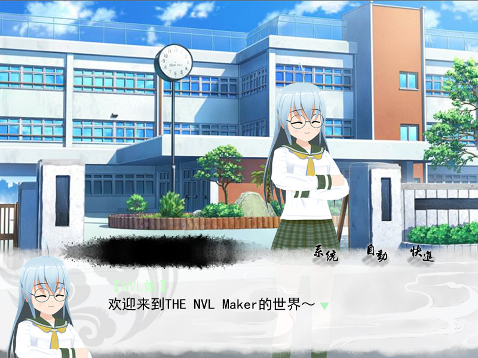

假如按照上一讲的制作方法，设定了对话框的话，实际执行游戏时，会是下面的效果：

人物姓名占用了原本对话的第一行位置，并且把对话挤到第二行了。
这当然可以通过调整对话框的文字显示范围来修改，但是只做这样的修改的话，名字和对话永远是对齐的，并且距离也是固定的。
有没有什么办法作出“姓名和对话分开”的效果呢？
答案当然是肯定的，只不过需要一点努力~
这个修改没有图形界面，不过也不要惊慌，因为真的很简单。只要改两行而已。
首先，用任意文本编辑器，比如说记事本，打开下面这个文件：
project\Hello_World(或者你自己的游戏文件夹名字)\Data\nvl\macro_play.ks
修改下图的两行坐标。
再次提醒请删掉这两行行首的“；”。
这个符号代表注释，如果一行脚本的开头被注释了，那么就等于没有发生。
修改的第一个地方的坐标，代表人物姓名显示的位置相对于对话文字的位置。
至于对话文字的具体位置，就是之前在“页边距”里设定的范围了。
因为比起对话文字来说，姓名显示位置偏右、偏上，所以分别是20和-48。
第二个地方则还原了对话文字的位置，免得跟着姓名位置的修改一起跑偏。
修改成功之后，测试游戏，点击“初出茅庐”，将会看到下图的效果。
对文字和姓名显示位置不满意的话，也可以继续调整脚本里的坐标数值和界面上页边距的数值。
姓名框图片可直接与对话框图片合并，当不需要显示姓名的情况，换一个对话框样式即可。
例如在对话界面编辑器里设定“对话框”的图片带有姓名栏，“全屏框”的图片则没有。
之后在要显示人名时使用“对话框”，不显示时使用“全屏框”。
当然，还有一种做法是，单独设立一个图层，用来显示姓名框图片。每当需要显示姓名时，首先显示这张图片。
既然脚本都已经打开了，仔细看看代码应该明白，“【”和“】”都是直接写在脚本里的。只要把它们删掉，游戏里的人名显示时，就不会加上“【】”符号了。
不过简单地删除【】符号，会导致“历史记录里显示人名颜色”的功能失效，因此需要进一步改造。
至于具体改造的方法，会在后面的教程逐步讲到。